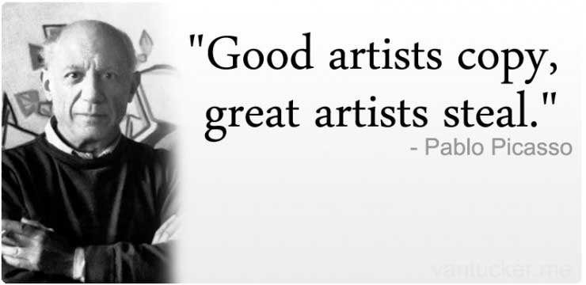

Tips to become a better graphics designer
If it wasn’t for design, we’d all live in a boring world. Everything would be very simple and unattractive. That’s why for all the graphic designers who love the craft, I’ve hunted down the best ways that you can improve your designing skills. Whether your focus is web design, logos or print, the quest for the best graphic design can be one of the most fulfilling experiences.
Good artists copy, great artists steal
Source
This Pablo Picasso quote has a lot of truth. I strongly believe that nothing is really new in this world, it’s just a constant rehash of existing or old ideas. What’s new is how all these old/ancient ideas are put together, mixed, mashed and clashed, and that’s what makes things creative, new and special. All the best products in the world ranging from Apple to Samsung, Coca-cola to Lays, keyboards to football were not really invented or discovered but they were just re-invented or re-discovered in ways and contexts that were inserted into popular culture.
Don’t be afraid to do lots of experimental throw-away work
Yes, being a perfectionist is good, but, you need to embrace imperfect work as well. Between those perfect masterpieces, practice your graphic design on pieces of experimental, throw-away work that improves your abilities.
10,000 hours of graphic design
Malcolm Gladwell, author of the book “Outliers” says it takes 10,000 hours to master something. When you push yourself, there is almost no limit to how much better you can be as a graphic designer. Whether by revisiting design theory, working on challenging graphic design projects, or collaborating with a more senior designer, you need to learn by doing and challenging yourself.
Make it stand out
Source
Great design tends to stand out. Whether it’s simple like this classic Macbook pro or a really complex design, you must make it stand out from the competition. If your design pops out from the others just by taking a look, that’s great! That’s just what you want. Keep working on your piece until it pops, and you will know that it does, when it grabs people attention.
Your signature style
Every great designer has its own unique style which comes from a lot of practise and hard work. Chances are, you don't have one, yet, but that’s where everyone starts. Keep on working and developing yourself and your signature style will come with time.